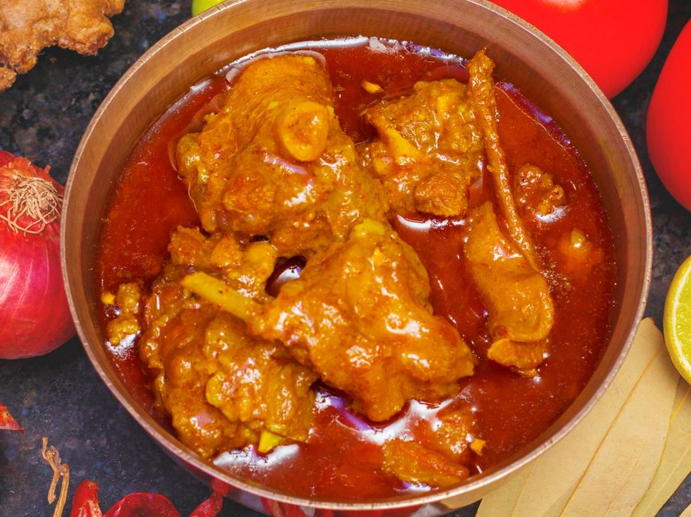
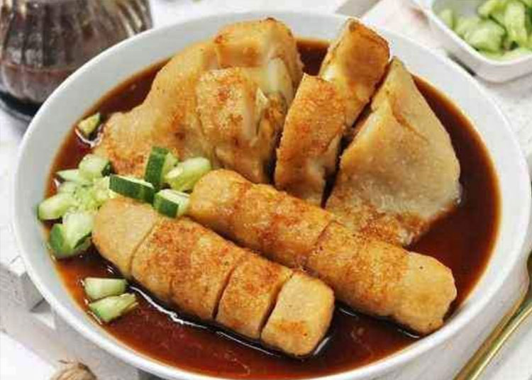
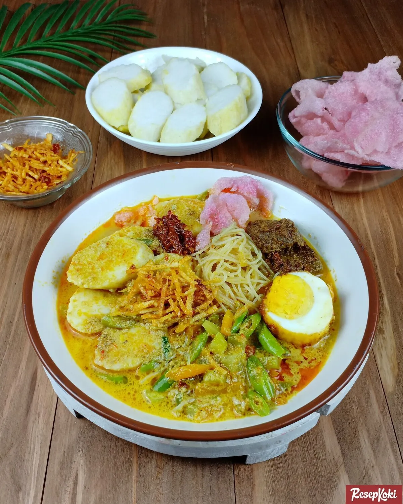

🍽️ Masakan Sumatera
🍖 Rendang (Sumatera Barat)

- Asal: Minangkabau (Padang)
- Bahan utama: Daging sapi, santan, rempah
- Proses masak: dimasak lama hingga kering
- Ciri khas: berwarna coklat kehitaman dan tahan lama
🥘 Gulai

- Asal: Padang
- Bahan: daging
- Bumbu: santan, kunyit, cabai, serai, lengkuas
- Ciri khas: kuah kental kuning keemasan
🐟 Pempek (Palembang)

- Asal: Palembang
- Bahan utama: ikan tenggiri, sagu
- Cara penyajian: goreng/rebus, kuah cuko
- Variasi: lenjer, kapal selam, adaan, kulit
🥬 Lontong Sayur Medan

- Asal: Medan
- Bahan utama: lontong, sayur labu siam, kuah santan
- Lauk tambahan: telur balado, sambal teri kacang
- Ciri khas: kaya rempah, gurih pedas ringan